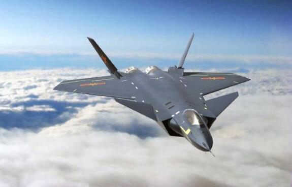

MENU


The information technology
With the deepening development of economic globalization, breakthroughs have been made in the scientific and technological revolution represented by information technology.
Beidou navigation
Beidou satellite navigation system is a satellite navigation system independently built and operated by China with an emphasis on national security and economic and social development.
For detailsMo zi no.
The world's first quantum science experiment satellite "mozi" has made China reach a new height in the field of quantum communication. the most secure encryption technology, in just a decade.
For detailsSunway taihu light
The sunway taihulight supercomputer system topped the list released by the TOP500 international organization at the world supercomputing conference in Frankfurt, June 20, 2016.
For details5G(fifth-generation communication)
5G is a hot topic in the communication industry and academia, China's 5G technology and academia is the world's leading level. Currently, China has 21 5G
For details1
2
-
 The aircraft carrier liaoning
The aircraft carrier liaoning
-
The j-20 stealth fighter
-
The y-20 strategic transport ship
-
052D Chinese aegis destroyer
-
Df-41 intercontinental ballistic missile
The aircraft carrier liaoning

The service of the liaoning gives China its first real aircraft carrier, fulfilling its century-old dream. Carrier battle group is an indispensable link to obtain regional and even global maritime military superiority. The term "blue-water navy" is often used to refer to a navy that performs combat or non-combat missions in the deep ocean and ocean off the coast. China's navy has always been focused on "coastal defense" and weak ocean-going capabilities.
The j-20 stealth fighter
Annihilates - 20 stealth fighter blow away from the territory of China to improve the service of a class, and it will mean China aviation technology has developed to the high-end era of aviation weapon capable of independent research and development, and in the ranks of high-end stealth aircraft national development, China already has the right to speak, this strategic equipment development on the promotion of China's aviation industry has an important landmark significance.
y-20 strategic transport ship

Officially code-named "kunpeng," after a mythical Chinese bird nicknamed "fat girl" for its outsize appearance, the y-20 makes China the third country after Russia and the United States to be able to develop its own heavy-lift military transport aircraft. The y20 is as important as the j-20, the fourth-generation fighter jet. Finally, our aviation people live up to our expectations and bring us a large transport aircraft with the advanced level of the world.
052D Chinese aegis destroyer

Chinese naval warships have long been viewed as "disposable anti-ship missile launch platforms". Since the beginning of the 21st century, although China has built a number of large and medium-sized warships with better comprehensive performance to replace the old ships, due to technical limitations, China's surface ships' strike capability on the opposite shore is still close to zero. However, the service of 052D fills the biggest gap in the strike capability of the Chinese navy.
Df-41 intercontinental ballistic

China's rapid advance in cutting-edge defense technology has restored the nuclear balance that was damaged by the gap between the U.S. and Russia. Compared with the United States and Russia, China, a small nuclear country, cannot rely on a large number of nuclear weapons to defend itself against the first nuclear attack from an enemy. So the "simple nuclear balance" can only be maintained in the manner of "we should have a few nuclear weapons too". It is against this background.
NEWs
-
defence
On May 5, 2017, China completed the maiden flight of the C919, its first large-jet mainline civil aircraft with independent intellectual property rights. This marks the official arrival of A new participant C(C919) in the monopolized market of large civil airliners, besides Airbus and Boeing. From the design and development of the C919 to the production line of the final assembly and the first flight, 36 universities, more than 200 enterprises and hundreds of thousands of industrial personnel participated in the research and development, and 70 enterprises became the suppliers or potential suppliers of the C919, which initially formed a complete aircraft manufacturing industry chain. Promoting components by products and finally realizing the leap-forward development of the industrial chain has become a "routine" of Chinese manufacturing. China's high-speed railway, which has won a wide reputation in recent years, is built by absorbing foreign designs and independently purchasing non-original parts and components. And gradually expand the scope of autonomy, in the new generation of independent research and development model selection of domestic components, to establish a sound high-speed rail industry chain. The C919 was not simply an aircraft assembly, but a huge civil aviation industry of its own.
-
information field
China successfully mined combustible ice in the northern waters of the south China sea on May 18, 2017. Combustible ice is a surprisingly clean energy source, with reserves almost twice as large as coal, oil and natural gas combined. Is recognized as the next generation of clean alternative energy. The trial production marks that China has become the world's first country to achieve continuous and stable gas production in the sea ice test. After the "shale gas revolution" led by the United States, the combustible ice mining revolution led by China is expected to promote the change of the whole world's energy utilization pattern. As a solid gas hydrate, combustible ice has an extremely high energy efficiency. One cubic meter of "combustible ice" can decompose and release more than 160 cubic meters of natural gas. It is predicted that the potential resources of combustible ice in China are more than 100 billion tons equivalent. It can replace fossil energy such as oil and coal in large quantities.
-
resources
On May 23, 2017, the China satellite navigation system management office announced that China will launch the third step of the beidou system, or beidou-3, and launch six to eight global networking satellites in the second half of 2017. It marks the official start of the third phase of the BDS mission: global networking. 18 beidou satellites will be launched around 2018. The beidou satellite system will take the lead in providing basic services to countries along the "One Belt And One Road" route, and China will build a world-class global satellite navigation system by 2020, eventually forming a global service capacity. In the field of smart phones, all the mainstream models have supported the beidou satellite navigation system, and some foreign brands have equipped with the function of beidou satellite navigation. According to statistics, the total sales volume of domestic navigation and positioning terminal products exceeded 530 million in 2016. Among them, 510 million smartphones with satellite navigation and positioning functions have been sold, and more than 30 percent have beidou functions. BDS has been gradually applied in emerging markets such as bike-sharing and urban smart pipelines on a large scale. Although it is small at present, it has shown great vitality.
-
field of life
On August 10, 2017, the world's first quantum science experiment satellite "mozi" successfully completed three scientific experiments: quantum entanglement distribution, quantum key distribution, quantum teleportation. Make our country reach a new height in the field of quantum communication. As the encryption technology with the highest security level, quantum encryption has long been the goal of all countries to chase. As early as 10 years ago, IBM, Microsoft and other well-known foreign companies took the lead in research and development, only for individual scientific experiments in China. Who would have thought that, in just 10 years, China has become the clear leader in this field. Quantum communication involves phenomena far beyond our conventional understanding of the universe, and Einstein called it a "ghostly" phenomenon. Because it postulates that an existing particle can instantaneously "transmit" information to another entangled particle, and that the entanglement seems to transcend time and space. No matter where it is, another entangled particle will sense. If your encryption USES quantum communication, that basically means it can never be cracked by your opponent. With the use of quantum communication, my opponent is always in a state of confusion over my information: either he doesn't know what I'm talking about; Either anything he tapped into about me was wrong. With unbreakable communication encryption technology, its economic value and practical significance is self-evident. Mozi's exploration of this path is leading the way.